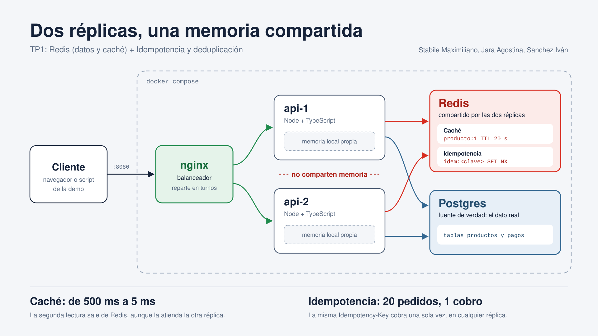

Trabajo Práctico 1 — Sistemas Distribuidos
Stabile Maximiliano · Jara Agostina · Sanchez Iván
Las aplicaciones no corren en un solo servidor: corren varias copias del mismo servicio (réplicas) para aguantar carga y no caerse si una falla.
Redis resuelve ambos: es una memoria rápida y compartida por todas las réplicas.

cliente → nginx (:8080) → api-1 / api-2 → Redis + Postgres
| Servicio | Rol |
|---|---|
nginx | Balanceador round-robin; único puerto expuesto (8080) |
api-1, api-2 | Dos réplicas de la misma API (Node + TypeScript) |
redis | Caché + claves de idempotencia (AOF activado) |
postgres | Fuente de verdad (productos y pagos) |
Cada réplica tiene su propia memoria y no comparten nada → por eso el estado va en Redis.
producto:1 → {...}.Guardar una copia de un dato que se pide mucho, para no ir a la base cada vez.
GET producto:1SET producto:1 ... EX 20PUT): actualiza Postgres y borra la copia → DEL producto:1Se llama "caché al costado" porque la aplicación decide cuándo leer/escribir la caché; la base no sabe que existe.
| Paso | Resultado |
|---|---|
| 1ª consulta | MISS — 1431 ms (va a Postgres) |
| 2ª y 3ª | HIT — 6 ms y 4 ms, atendida por api-2 (caché compartida) |
| PUT precio nuevo | EXISTS producto:1 → 0 (copia borrada) |
| Siguiente | MISS con precio nuevo → luego HIT (3 ms) |
| TTL 20 s | Redis borró la clave solo → vuelve a MISS |
≈ 100× más rápido que ir a la base
Una operación es idempotente si hacerla una o muchas veces deja el mismo resultado.
Llegan repetidos por timeouts, doble clic, reintentos automáticos o colas "al menos una vez".
El cliente genera un identificador único (UUID) por cada pago y lo manda en el header. Todos los reintentos llevan la misma clave.
El servidor la anota y, si la vuelve a ver, no cobra de nuevo: devuelve la misma respuesta de la primera vez.
Es el mismo mecanismo que usan pasarelas de pago reales, como Stripe. La deduplicación es la misma idea aplicada a mensajes con ID.
POST /pagos con Idempotency-Key: abc
SET idem:abc {"estado":"procesando"} NX EX 86400
# NX = "guardar solo si No eXiste" (atómico)
# → si llegan 20 pedidos a la vez, SOLO UNO gana
completado + respuesta.procesando → 409 "reintentá en unos segundos"completado → devuelve la respuesta guardada + header Idempotent-ReplayedEl mismo pago enviado 3 veces, con la misma clave.
| Modo | Qué pasa | Cobros |
|---|---|---|
off | Cada intento cobra | 3 ❌ |
memoria | api-1 cobra; api-2 no sabe y cobra; el 3º vuelve a api-1 | 2 ❌ |
redis | api-2 ve la clave en Redis y devuelve la respuesta guardada | 1 ✅ |
20 pedidos simultáneos con la misma clave.
| Modo | Resultado | Cobros |
|---|---|---|
memoria | Cada réplica deja pasar uno y rechaza el resto (409) | 2 ❌ |
redis | Solo 1 de los 20 gana el SET NX; los otros 19 → 409 | 1 ✅ |
Verificación cruzada: el último pago tiene id=9 = 3+2+1+2+1 cobros de las dos corridas.
Un pago hecho antes de la caída no se re-cobra: la clave sobrevivió al reinicio gracias al AOF (Redis la había guardado en disco).
| Caché | Idempotencia | |
|---|---|---|
| Para qué | Copias de datos para leer rápido | Recordar operaciones ya hechas |
| Operación | GET / SET EX / DEL | SET NX EX (atómico) |
| Si Redis cae | Fail-open: sigue, más lento | Fail-closed: rechaza |
| Si se pierde un dato | Nada, está en Postgres | Riesgo de duplicado → AOF |
Idea común: el estado local por proceso no alcanza. Lo vimos 3 veces: balanceo de nginx, caché e idempotencia.
Redis resuelve ambos temas porque es una memoria compartida, rápida
y con operaciones atómicas (SET NX).
Pero no es gratis: es otra pieza que se puede caer, vive en RAM y sus copias pueden quedar desactualizadas.
Por eso cada uso decide qué pasa cuando falla: la caché sigue (solo cuesta velocidad); los pagos se frenan (un error cuesta plata).
La idempotencia no evita que lleguen pedidos repetidos:
evita que tengan efecto.
Preguntas
Stabile Maximiliano · Jara Agostina · Sanchez Iván